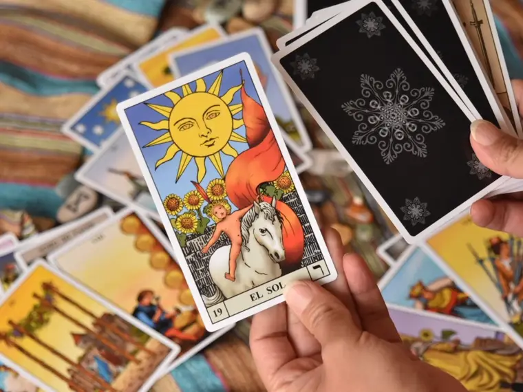

01
Tarot de pronóstico y terapéutico
Dos formas de leer las cartas. El de pronóstico mira un tema concreto y hacia dónde se está moviendo. El terapéutico usa la tirada como espejo, para entender lo que se repite y qué parte tuya lo sostiene.
Consultar por esta